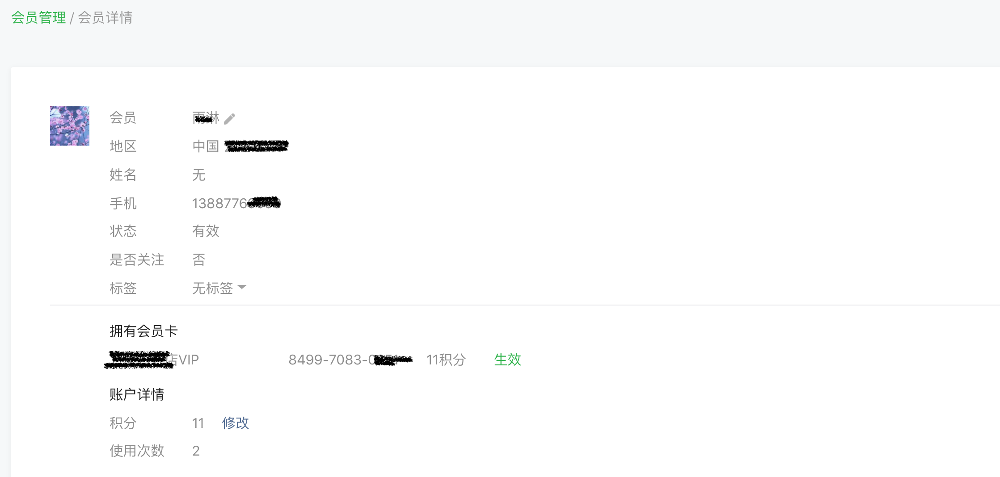
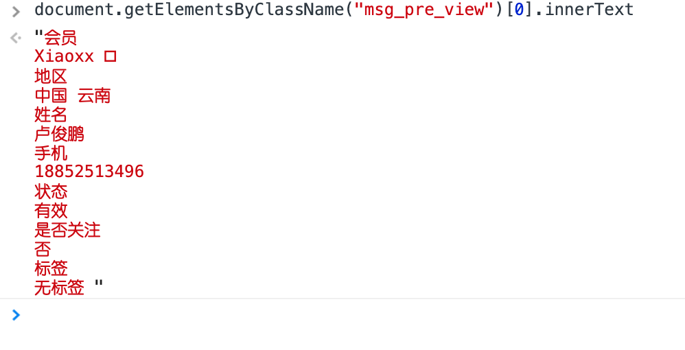
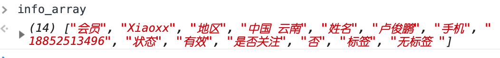
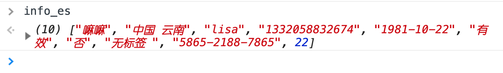
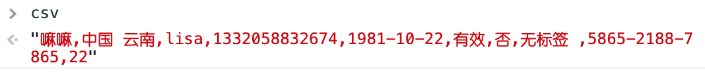

GitHub页面：wechat_vip_info_export
交代背景：微信公众号认证快到期了，没有需求就不想再继续认证，一年300有点贵。但是顾客的会员卡是用微信的卡券功能办理的，就需要导出所有会员的信息并且导入到另一个会员管理系统里面。
查了几遍微信公众号开发者的文档，发现只可以用API得到关注列表，或者创建会员卡，就是不可以得到会员信息。看来是故意的不想让我轻易导出会员信息。
想了几种思路：Python？手动导出？javascript？
会员两百多个，手动也不是不可以，但是作为程序员，能让电脑自己动我就绝不动。
至于为什么没用Python，主要是公众号后台的登录认证有点复杂，又是输密码又是扫码，还认浏览器，对python相当不友好。
于是面对着这个页面，想了很久的我想到用Javascript。

不是有document.getElementsByClassName嘛，我只要找到放信息的标签的class就好了。1
var info = document.getElementsByClassName("msg_pre_view")[0].innerText

这样得到的就是以回车为分隔的会员信息，很好的第一步。
下一句就是把它转换成数组：1
var info_array = info.split("\n")
然后把会员名后面的方框去掉，因为那里是一只小笔，也被抓进来了：1
info_array[1] = info_array[1].replace(" ","")
现在info_array就长这个样子

如你所见，表头和内容需要分离，现在在同一行。1
2
3
4
5
6var info_es = []
var info_head = []
for (var i=0;i<8;i++){
info_head[i]=info_array.splice(0,1)[0];//偶数行为head
info_es[i]=info_array.splice(0,1)[0]; //奇数行为内容
}
这样info_es里存的才是我需要的信息。
接下来还有会员号和积分，没有和上面的信息在同一个class里面，就另外获取一下：1
2
3
4var card_no = document.getElementsByClassName("msg_pre_view")[1].getElementsByTagName("span")[1].innerText
var card_point = parseInt(document.getElementsByClassName("msg_pre_view")[1].getElementsByTagName("span")[2].innerText)
info_head.push("会员号","积分")
info_es.push(card_no,card_point)
在后面就把会员号和积分添加进刚才数组的末尾。
现在，info_es就长这个样子

那为了保存我现在得到的数据，我试过用cookie，但是有空间限制，并存不下我两百多个会员的信息，所以后来是使用了localstorage，更健壮也比cookie大很多，而且存取只要两句话：
1 | localStorage.setItem("csv",csv);//存 |
就喜欢这么简单的
不过在存之前先把我们数组转换成csv的格式1
var csv = info_es.join(",")

所谓csv格式就是，逗号分隔数据，以
\n换行符来分隔行，这里是一行的数据，所以还没看到\n。
接下来就是，把csv变量存进localStorage里1
localStorage.setItem("csv",csv);
已经很完美了，但这还只是一行，我们的目标是星辰和大海。
为了实现页内跳转，我用window.location.href这个值来定义当前的URL，这样就不必打开新窗口再关闭。
下面讲讲主要思路：在会员列表页开始，计数器写1，点第一个会员的详情，把数据弄好存进localstorage，返回会员列表页，计数器加一，点第二个， 读取localstorage里的csv，把当前会员数据追加进csv，存csv，以此类推，计数器加到大于10的时候点下一页的按钮，然后计数器写1。
还有一个问题就是列表页的js代码不能马上就运行，列表还没加载出来，会报错。要用window.addEventListener('load', function() {}来判断页面加载完成，完成后就执行{}里的语句。
总的代码：
1 | function read_info(){ |
最后，它需要一个运行的载体，那就是tampermonkey没错了，完整的脚本我还上传到了GreasyFork，在这里：微信公众号会员信息导出)
需要的尽管拿去用吧。